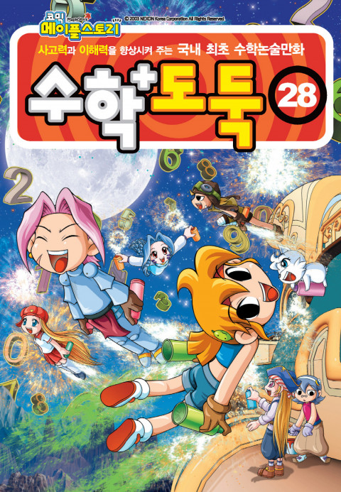

디지털 매체를 통해 사람들이 보고, 듣고, 즐길
수 있는 여러가지 것들을 두루 가리키는 표현이다.
대표적인 것으로 소설, 만화, 게임, 애니메이션, 방송 등이 있다.
즉, 문화적인 요소를 디지털 매체를 통해
사람들에게 전달하는 어떤 것이라고 할 수 있다.
자연상태에서 벗어나 일정한 목적 또는 생활 이상을 실현하고자 사회구성원에 의하여 습득, 공유, 전달되는 행동 양식이나 생활양식
인터넷이나 컴퓨터 통신 등을 통하여 제공되는 각종 정보를 디지털 방식으로 제작해 처리, 유통하는 모든 내용물을 통틀어 일컫는다.
기존의 문화 콘텐츠 중 어떤 것이라도 스마트 기기를 통해 공급이 되면 곧바로 '스마트 문화 콘텐츠'가 된다.
